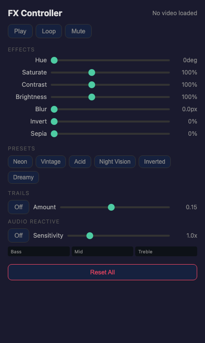

Effects & Audio
The FX Controller is a popup window that gives you live control over visual effects, motion trails, and audio-reactive modulation. Open it by clicking FX in the controls bar.

11-effects-controller.png).Opening the FX Controller
Click the FX button in the main window's controls bar. A 400×650 popup window opens. The FX button highlights green to indicate the controller is active. When you close the popup, the button returns to its default state.
The controller communicates with the main window in real time — every slider change is applied instantly to the video and all tile clones.
Transport controls
The top of the FX Controller shows the current video filename and three transport buttons that mirror the main window controls:
- Play / Pause — toggles playback (green when playing)
- Loop / Bounce — cycles through playback modes
- Mute / Unmute — toggles audio
These buttons let you control playback without switching back to the main window — useful when the main window is fullscreen on a second display.
Effect sliders
Seven CSS filter effects are available, each with a dedicated slider:
| Effect | Range | Default | Description |
|---|---|---|---|
| Hue | 0 – 360° | 0 | Rotates the colour wheel. 180° inverts all colours. |
| Saturate | 0 – 300% | 100 | 0% is greyscale, 300% is hyper-saturated. |
| Contrast | 50 – 200% | 100 | Lower values flatten, higher values punch. |
| Brightness | 50 – 200% | 100 | Dims or brightens the image. |
| Blur | 0 – 10 px | 0 | Gaussian blur. Subtle values (0.5–2) create a dreamy look. |
| Invert | 0 – 100% | 0 | Inverts pixel colours. 100% is a full negative. |
| Sepia | 0 – 100% | 0 | Warm vintage tone. |
All effects are applied as CSS filters, so they render at full frame rate with no performance penalty. Effects are also applied to the output window and to recordings.
Effect presets
Six named presets provide one-click starting points:
| Preset | Character |
|---|---|
| Neon | Hyper-saturated with boosted contrast — electric club look |
| Vintage | Desaturated sepia with slight blur — worn film aesthetic |
| Acid | 180° hue shift with max saturation — psychedelic |
| Night Vision | Green hue shift with high contrast and brightness |
| Inverted | Full colour inversion — negative image |
| Dreamy | Low contrast, slight blur, warm sepia tint |
Click a preset to apply it. The preset button highlights to show it is active. Moving any slider clears the preset highlight — the preset is a starting point, not a lock.
Reset All
The Reset All button at the bottom of the FX Controller returns every slider to its default value. This instantly removes all effects from the video.
Motion trails
The Trails section adds a ghosting/afterimage effect to all tiles. When enabled, each frame blends into the previous frames instead of replacing them.
- Toggle button — turns trails on or off
- Amount slider (0.02 – 0.30) — controls trail opacity. Lower values create longer, more transparent trails; higher values create shorter, more opaque trails.
Trails work with all view modes and mirror presets. They are particularly effective with bounce mode and slow-moving source material. Trails are also visible in the output window and in recordings.
Audio-reactive effects
The Audio Reactive section modulates visual effects in real time based on the video's audio:
- Toggle button — enables or disables audio reactivity
- Sensitivity slider (0.5x – 3.0x) — multiplier for how strongly audio drives the effects
- Audio meter — three horizontal bars showing real-time Bass, Mid, and Treble levels
How audio drives the visuals
The audio signal is split into three frequency bands using an FFT analyser:
- Bass drives brightness (up to +50%) and saturation (up to +80%)
- Mid drives hue rotation (up to +30° per frame)
- Treble is displayed in the meter but does not currently drive effects
Audio-reactive modulation is applied on top of whatever effects you have set with the sliders, so you can use the sliders as a baseline and let the audio add energy on the beats.
Disconnection warning
If you close or reload the main window while the FX Controller is open, a warning banner appears: "Main window disconnected. Close and reopen from the main app." The controller checks every second whether the parent window is still alive.